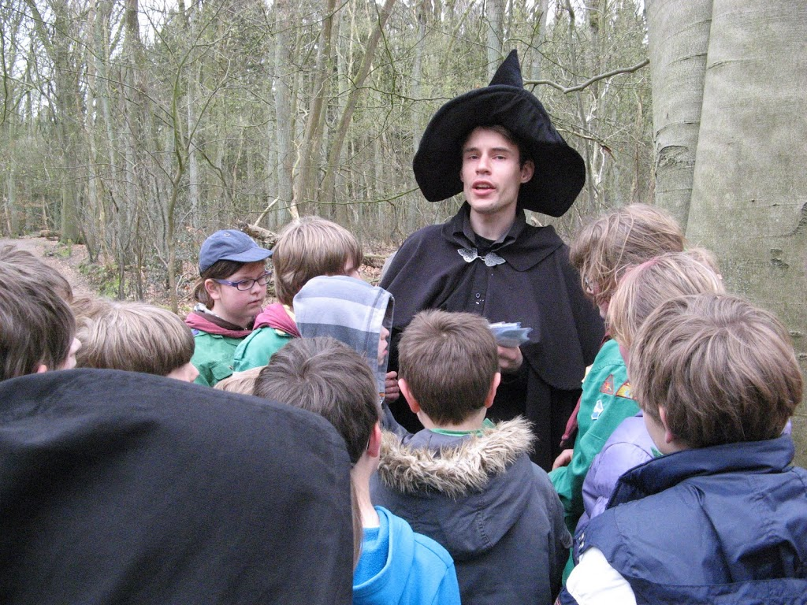
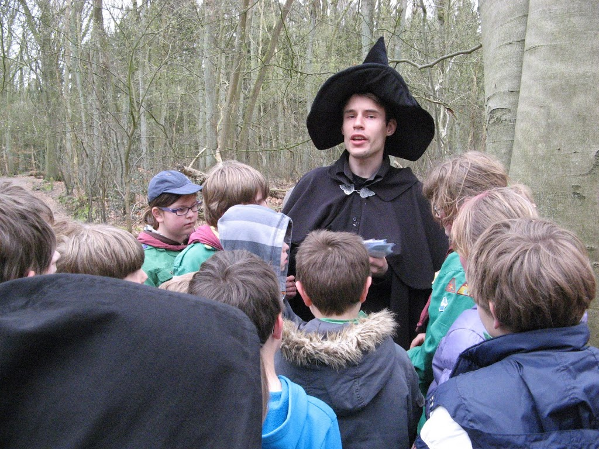

Joost Huizinga
Ph. D. student at the University of Wyoming About me
About meHello there! I am Joost Huizinga, a guy from the Netherlands who somehow ended up studying at the University of Wyoming in Laramie. I am originally from a lovely small town called Blaricum although the last two or three years before coming to the USA I lived in Amsterdam. I got my degree and Master's degree at the VU University in Amsterdam, but for a detailed description of my professional career you should look at my CV, not the 'About me' page.
My hobbies include hiking, snowboarding and gaming. I have also been a cub-scouts leader for a long time and I love almost any outdoor activity. Here are some pictures to show what I am talking about!


 
